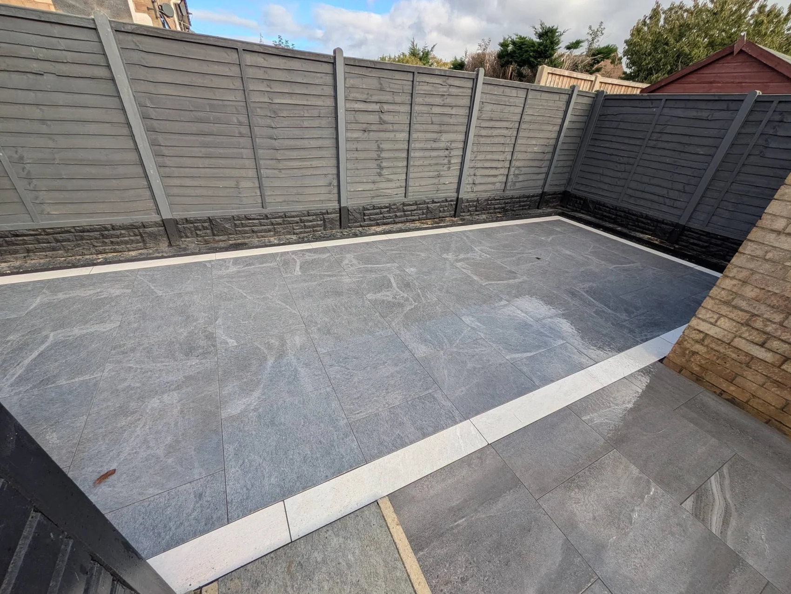

GRANTHAM · PAVING & LANDSCAPING
Project photos.
See the paving, gardens and groundwork from different angles. Watch the videos ↓
RECENT WORK
The project gallery
Select a photo to view it in full.
REQUEST A QUOTE
Tell us what you want to create.
The form opens WhatsApp with your project details ready to review and send. You can attach photos there.
Grantham Paving & Driveways
Ready to plan your project?
Grantham · granthampavinganddriveways@yahoo.com